Memory-Making Experience
A relaxed, personalized session designed to feel meaningful, joyful, and true to you.

Beautiful portraits full of soft, genuine emotion.
Portraits are all about capturing your true self and the most important people in your life.
From seniors and branding to family, maternity, and everything in between, I strive to create timeless portraits you’ll cherish forever.
Celebrating their last bittersweet high school days.
Documenting the heart of your family.
Showcasing the authentic you.
There is something so special about portrait photography. It’s a chance to slow down, for you to feel beautiful and cherished, and for me to capture your true essence as you are. We’ll create a comfortable, laid-back experience where you can relax, laugh, feel connected, and celebrate yourself in front of the lens.
From romantic couples and maternities to modern headshots and senior portraits, I’m here to create portraits that tell your story with heart and artistry.
A relaxed, personalized session designed to feel meaningful, joyful, and true to you.
Photos edited with a timeless, soft look that feels polished without ever feeling overdone.
Stunning portraits you’ll cherish forever and look back on with gratitude for years to come.
A simple, stress-free process that results in beautiful portraits you will cherish forever.
We talk about your vision, location, and the story you want your photos to tell.
Relaxed, natural guidance so you can simply be yourself while I capture genuine moments.
Capturing all of life’s most special moments.
Capturing connection, laughter, and moments you’ll cherish for years.
Celebrating the excitement and achievement of this special milestone.
Natural, authentic images tailored for your business or personal brand.
Documenting the beauty and anticipation of this incredible chapter.